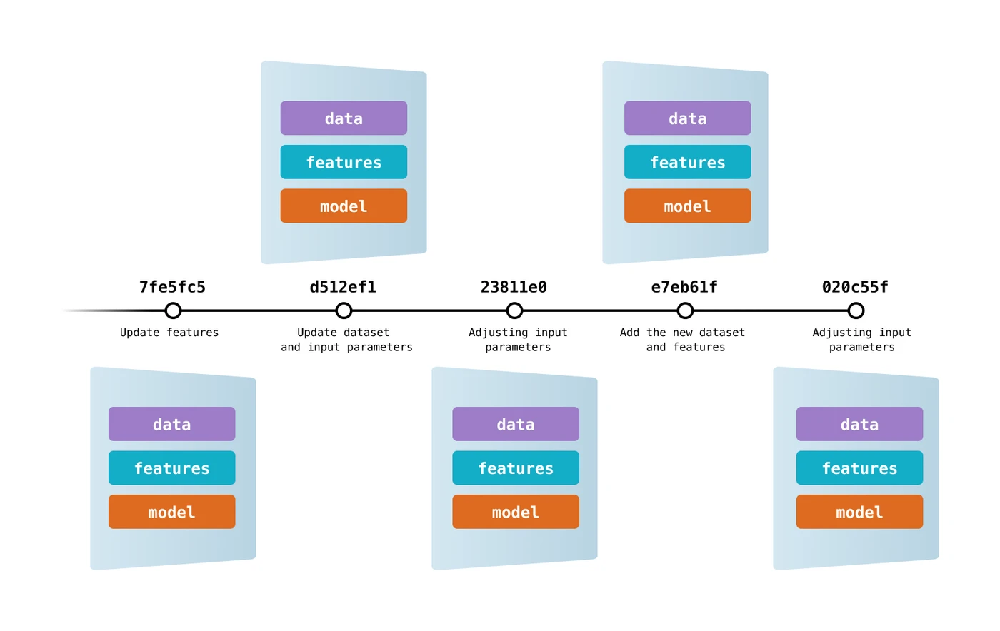

DVC: Data Versioning Control
Let's learn how to use tools for data versioning.
We already know the most famous versioning tool: git!
Question! 1
Answer!
It is possible, but it is not the best approach. Git is primarily designed for versioning source code and text-based files, it doesn't provide efficient storage and diffing capabilities for large and frequently changing binary files used in ML.
An Alternative
In this class we will explore DVC, an open-source version control system for Data Science and ML projects. DVC provides a git-like experience to organize your data, models, and experiments.
From the DVC creators
DVC is a tool for data science that takes advantage of existing software engineering toolset.
It helps ML teams manage large datasets, make projects reproducible, and collaborate better.
Create repository
Question! 2
Important!
Access the repository folder and work from there!
Install dvc
Question! 3
Question! 4
Use dvc
Let's initialize dvc in our repository.
Question! 5
Then, we can use dvc to download a dataset.
Question! 6
Tip! 1
You could have used any tool (curl, wget) to download this file.
If this file was in a git repository, you could use dvg get instead of dvc get-url.
Question! 7
Question! 8
Question 9
Remotes
In DVC, remotes refer to the storage locations where you can store and retrieve your data, models, and other artifacts.
For this we can use, among other alternatives, a local folder or an S3 bucket.
First we will use a local folder.
Question! 10
Question! 11
Question! 12
Testing the remote
To check if DVC is actually tracking the file, let's simulate a deletion and restoration of the data/data.csv base.
Question! 13
Question! 14
Question! 15
Question! 16
Checkout to version
When developing with git, it is common to do checkout to explore a specific version of the software to be developed.
With DVC, we added the ability to maintain data versioning, without necessarily using the repository as storage.
Question! 17
To make it easier to understand, let's create a tag:
Tip! 2
A git tag is a named reference to a specific commit in a Git repository.
Question! 18
Let's simulate that the data scientist identified the need to add new features to improve the model's performance.
Question! 19
Attention!
After downloading, open the file data/data.csv and see that it has more columns than the previous version!
Attention!
create a new src/train.py file to simulate some source code addition:
Question! 20
Question! 21
Now we can switch between versions, checking out both git and dvc. This way, both the source code and the data are versioned!

Attention!
Keep the file data/data.csv open in VSCode and split your screen. This way you will be able to observe the modifications in the file as soon as the checkout occurs in DVC!
Question! 22
Attention!
Check if the data/data.csv file has been restored to the previous version.
Question! 23
Attention!
Repeat these last two steps a few times and check both the repository and the data being changed!
Important
It is not mandatory to use git tag. You could checkout directly to a commit.
We use the tag just to standardize and have a named commit!